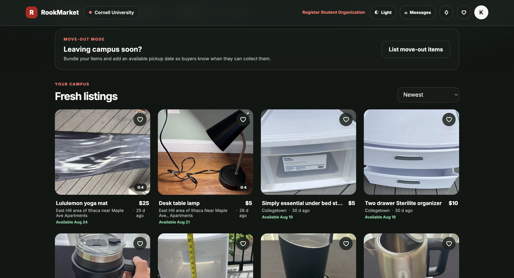
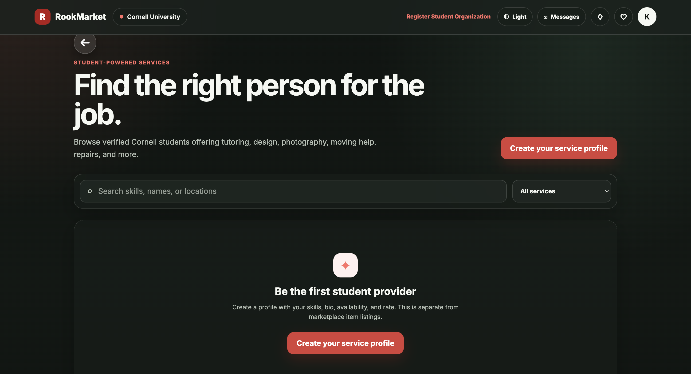

Campus trust
Marketplace access is limited to students with a confirmed campus email.
Featured project · 2026
A campus-only marketplace where verified college students can buy, sell, and connect within their community.
01 · The idea
Students often need furniture, electronics, and dorm essentials for only part of the year. When semesters end, useful items are discarded while other students are looking to buy the same things nearby.
I built RookMarket to make those exchanges simpler and more trustworthy: access is tied to a verified campus email, listings are local, and conversations stay connected to the item being sold.
Marketplace access is limited to students with a confirmed campus email.
Listings, pickup details, and conversations are designed around nearby campus transactions.
Move-out tools help students keep useful items in circulation instead of throwing them away.
Students confirm an eligible campus email before entering the live marketplace.
Users browse local items, filter by category and pickup area, or create their own listing.
Messages remain tied to a listing so offers and pickup details are easy to follow.
02 · Product experience
Students can discover nearby items and also find verified peers offering tutoring, design, photography, moving help, repairs, and more.


03 · Building it
RookMarket uses Vite and TypeScript for the application foundation, with Supabase providing authentication, Postgres data, file storage, and row-level access controls.
The responsive web application is packaged for iOS and Android with Capacitor. This keeps the core marketplace experience in one codebase while still supporting native distribution.
A responsive interface designed for desktop and mobile use.
Authentication, Postgres, storage, and protected user data.
The same product packaged for iOS and Android.
Server-side checks and marketplace rules help screen prohibited listings.
04 · What I learned
The hardest product decisions were not visual. They involved deciding who gets access, how users communicate, what happens when content is unsafe, and how the same rules remain understandable across web and mobile.
Building RookMarket pushed me to think beyond individual features and design the systems around them: verification, moderation, privacy, responsive interaction, and a codebase that can evolve without interrupting the live product.
See the product in action